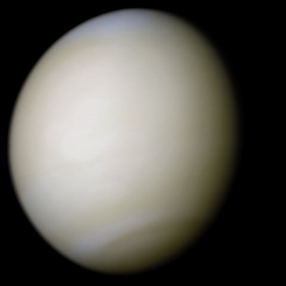

Venus, the second planet in the Solar System.

Venus
Venus is the second planet from the Sun, orbiting it every 224.7 Earth days. Venus is a terrestrial planet and is sometimes called Earth's "sister planet" because of their similar size, gravity, and bulk composition. However, it has also been shown to be radically different from Earth in other respects.
Orbital Characteristics
- Aphelion
- 108 939 000 km
- Perihelion
- 107477000 km
- Orbital period
- 224.701 d
- Average orbital speed
- 35.02 km/s
Physical Characteristics
- Mean radius
- 6051.8±1.0 km
- Mass
- 4.8676x1024 kg
- Surface gravity
- 8.87 m/s2
- Axel tilt
- 177.36º